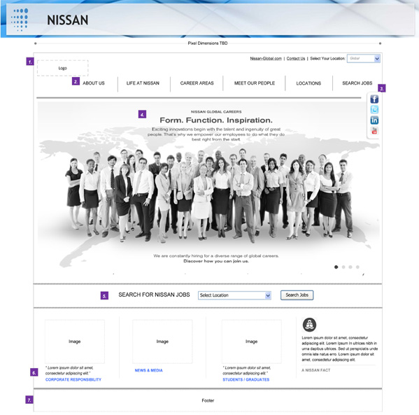
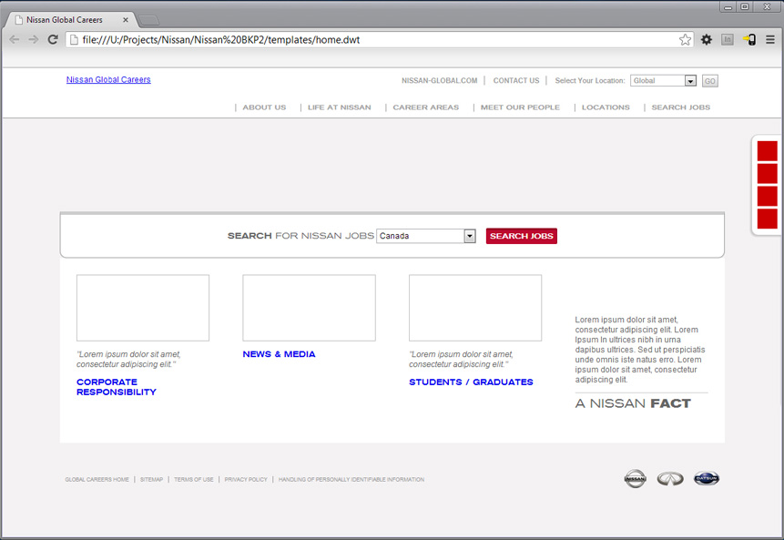
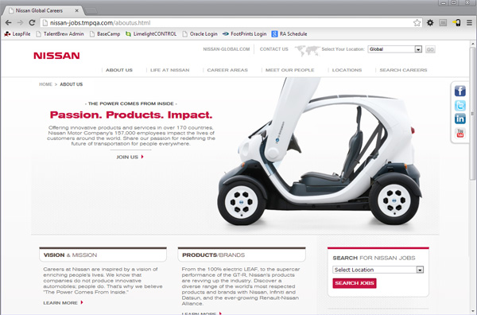

Responsible Responsive Design Case Study: Nissan Global Careers Site
The Nissan Global Careers site is not only one of TMP's first fully responsive custom careers sites, but also one of the first to be developed through a more collaborative workflow between IXD, creative, and development. The team worked together from day one to discuss content, layout, and functionality, which allowed them to work out potential issues and avoid endless back-and-forth e-mails later on in the development process.
This case study details the development process from both a procedural and a technical standpoint. Understanding the benefits of effective communication among team members early on in the responsive development process is as necessary to successful project completion as is knowing the general mechanics of responsive, mobile-first websites.
Before moving on, Internet high fives all around to the Nissan team:
- Sean Brittain - Producer
- Sara DiOrazio - Project Manager
- Neha Pahwa - IXD
- John Heberer - Creative
- Jessica Benoit - Creative
- Colin Connor - Copywriting
- Stephanie Plumeri - Front End Development
- Georg Jezersek - QA
- Ruben Nieves - QA
B.C. & A.D.
Normal workflow for site conceptualization/development is very linear:
- IXD/Wireframes
- Creative
- Client Approval
- Development
In this pattern, the developer doesn't see what is going on until after client expectations have already been set. Any elements of the site that cannot be developed as indicated in the mockups will not be able to be delivered as promised, which can lead to disappointed clients. We can do a lot with responsive development, but there are some limitations and considerations that we need to take into account in a design before it goes to the client.
- B.C. ("Before Creative")
- This is when the front end developer was brought in to conversations about site content and functionality on the Nissan project, and this is when the developer should enter the picture.
- A.D. ("After Design")
- The developer should continue to be looped in as revisions are made to site wireframes and mockups. A quick conversation only takes a few minutes and can save hours of back-and-forth when it comes time to actually build the site.
The responsive development workflow should look more like this (which you may recognize from an earlier Digiknow):

For the Nissan site, the developer began building out basic wireframes in the browser before final creative was completed. This not only sped up development once creative was approved, but also helped the creative team design for mobile by showing them a living, breathing version of the site that they were designing.
- 
- 
In addition, the project manager sent out every new round of wireframes and creative to all team members for feedback before being presented to the client. This allowed the team (especially the very picky developer) to flag any potential issues and develop several potential solutions to be presented as options on the client calls.
The Nissan History page is one of many pieces of the overall development process that exemplifies how the collaborative process can quickly and effectively resolve potential issues that may arise in creative, IXD, and/or programming.
Mobile First

- 
Mobile first development focuses on building the site structure around content, not images or functionality. Before a single wire is put to frame, one question must be asked and answered: What do we want users to see first in a limited screen space?
Discussions about content priority to optimize the user experience should be held early and often between all members of the project team: project managers, IXD, creative, copywriters, and developers. It is important to keep everyone in the loop, especially if (and when) the client requests new content or features are added, or to change existing site elements.
- Progressive enhancement
- This content-focused strategy builds the basic site structure to be accessible on the lowest common denominator of browser, and treats additional styles and scripts as additional features that are nice but not necessary to deliver the site content to the end user.
With the mobile first development strategy, we treat the use of the extra screen space provided by desktop browsers as an enhancement on the mobile site, rather than as the starting point for development.
Mobile browsing considerations
- Page weight
- Users pay for every byte that they download - make those bytes count!
- Avoid use of large, superflous images and unnecessary scripts.
- Take advantage of CSS for as much as possible - arrows, background gradients, buttons, etc.
- Form fields
- Most mobile browsers have their own ways of handling user interaction with form elements (such as the global location selector).
- Avoid custom styling of dropdowns to allow native browser functionality to work properly.
- Finger vs. Mouse
- Need to increase link sizes/hit points for "fat fingers" on touch screens.
- Cannot rely on "hover" action trigger on touch screens - use "click" as a fallback.


Tech Specs
The Nissan site was built (as per client delivery specifications) in flat HTML, CSS, and Javascript files. HTML5 was the code standard of choice, as it uses a more semantic, easier to read markup (for both developers and web crawler bots).
Web Content Accessibility Guidelines (WCAG) were also taken into consideration during development. The HTML includes proper form element labels, attribute tags, and navigation links to comply with accessibility standards.
Additionally, the site was built with a number of fallbacks for browsers that do not have Javascript enabled. Users can access all of the site content regardless of their browser settings.
Compact Cars
Note - this is the only car-related pun in this presentation. You can thank me later.
An important formula to remember when developing a site is: faster websites = better user experiences. This is especially the case for mobile browsing on a 3G/4G network.
Optimizing Nissan, byte by byte
- Minified CSS and Javascript
- Compressed images
- Dynamic loading of thumbnail images in Locations page accordion - only load when content is expanded
Antisocial optimization
The Nissan site, by design, has a social "slider" on the desktop version of the site. On touch screens/mobile devices, the full feeds do not load. Instead, the social icons function as plain links to Nissan's respective profile pages on those social networks.
How much weight do those feeds add to the page? Not to be rude, but social feeds are pretty fat. Take the Nissan Careers Culture Page, for example:
Again, the only difference here is adding in the social feeds - all other images and content load into the page on both mobile and desktop views of the site.